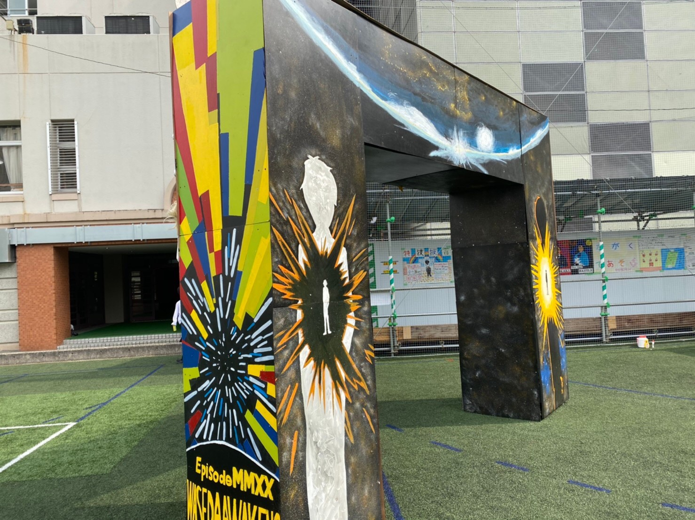
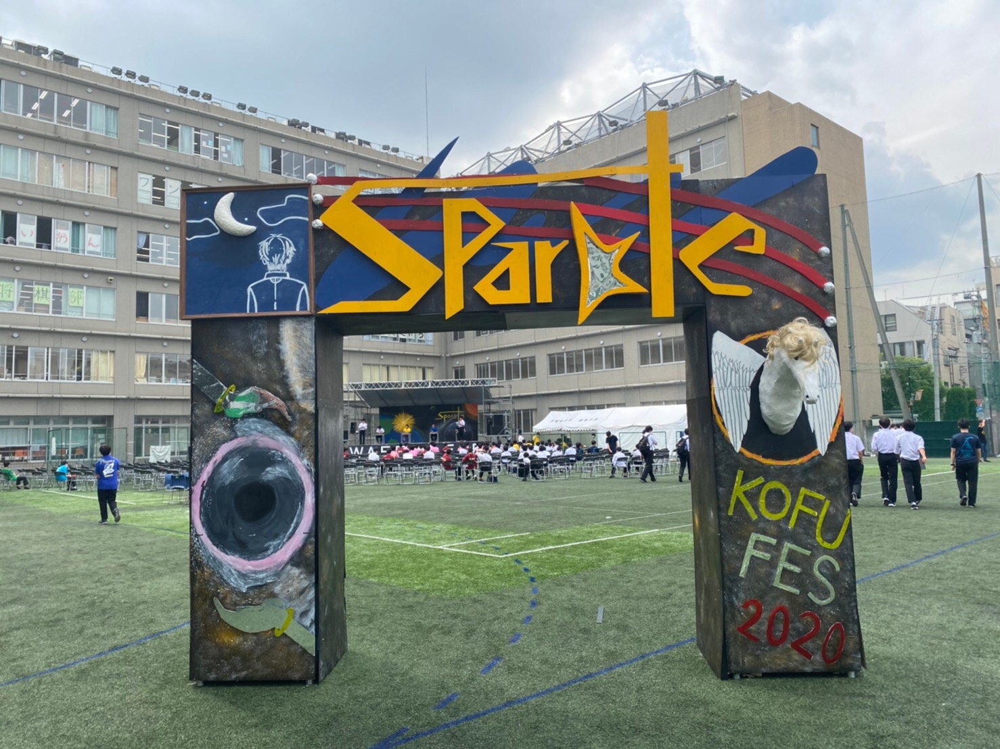
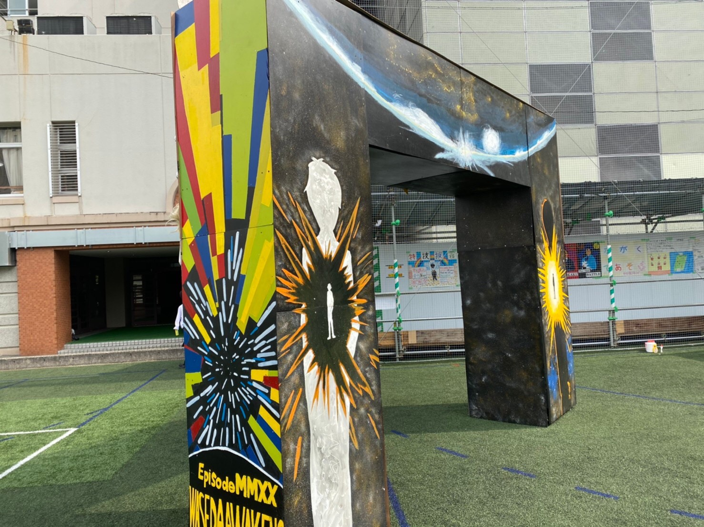
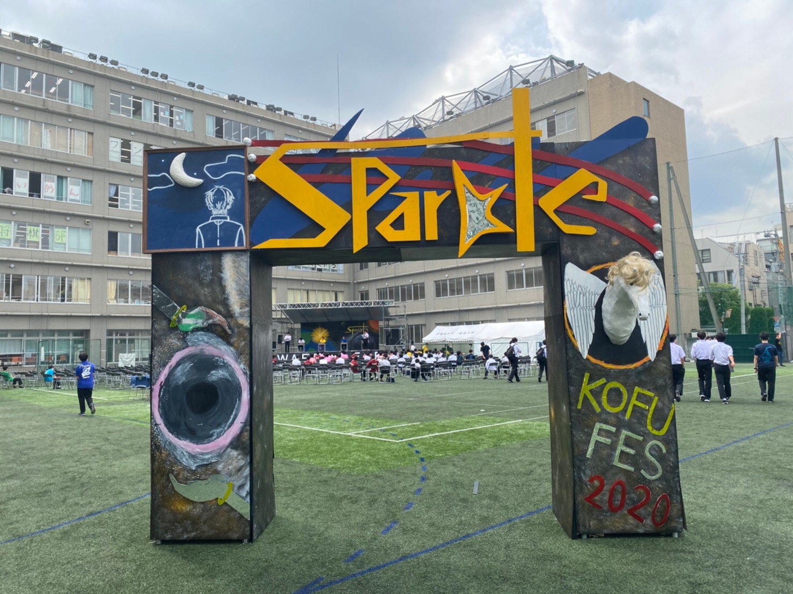

学実とは?
通常の学校でいう文化祭実行委員会の略『文実』と同じで、学芸大会実行委員会の略が『学実』です。中学１年生～高校２年生まで合わせて１２０人以上のメンバーで構成されています。その沢山のメンバーが９部署に分けられ興風祭当日に向けて約１年間活動します。
総務
総務は学実、そして興風祭全体を統括している部署。全体の方針を決めたり、先生方と生徒への連絡の架け橋をしたり、各部署にアドバイスしたり、有志団体や各部活の手助けをしたりなど活動は多岐に渡る!
『興風祭全体のリーダー的存在』
活動風景
門
基本的な仕事はただ１つ、当日までに門を完成させること! 毎年パリの「凱旋門」のような人を感動させられるような門を作ることを目指している!
『来場、入場時、客の心を鷲づかみ』
活動風景
 



噴水
基本的な仕事はただ１つ、当日までに噴水を完成させること! 毎年イタリアの「トレヴィの泉」のような人を感動させられることの出来る噴水を作ることを目指している!
『校庭の中心で在校生のナ〇パをお助け!?』
活動風景
校内装飾
基本的な仕事は、当日までに門や噴水以外の校内の装飾を完成させること! ステージ裏の看板を作ったり、ゴミ箱を鮮やかにしたり、巨大垂れ幕を作ったり... 作るものがとても多い為毎年多くの部署から手伝いが来るのが伝統だ!
『興風祭全体の雰囲気作りを担う』
活動風景
イベント
本校名物の大迫力ステージイベントに関わる全てを取り仕切る。各企画を決めたり、演者の活動を取り仕切ったり、音響業者と話し合ったり、司会台本をまとめる。
『興風祭名物ステージイベントの縁の下の力持ち』
活動風景
物品
基本的な活動は、 各団体にパネルや暗幕などの様々な物品を貸し出し、それを管理すること。本番２日前の『搬出入の日』には貸し出した物品の物流を取り仕切る為大忙し。
『各団体が欲しいものをたくさん貸し出し』
活動風景
搬出入
基本的な活動は、各団体が使用する机や椅子、教壇などの数の管理をすること。本番２日前の『搬出入の日』には階段を行ったり来たりして大忙し。階責（階の責任者）や階総責（その棟の責任者）には声のでかさが求められる!
『各団体のスムーズな準備を支える』
活動風景
プログラム
基本的な活動はパンフレットを作ること。毎年、５０ページ近くにも及ぶフルカラフルパンフレットを作る。パソコンやデザインの知識が豊富な精鋭達が集まる!
『パンフレット制作専門家集団』
活動風景

食品
基本的な活動は当日模擬店（様々な食品が販売される所）の管理。その他にも、新メニューを考えたり、メニュー表を作成したり、外部の食品業者と交渉したりする。当日は客の状況を見ながら販売価格を変えるなど売り残しがないように常に先のことを考える必要がある!
『来場者が安全に胃袋を満たすのを助ける』
活動風景
生徒参加型企画
今年のテーマSPARKLE（輝き）にちなんで、生徒全員による巨大パネルの作成をしました‼（パネルは縦２ｍ、横７ｍの超巨大サイズです）
作成は基本的に学実の中１と総務部署で行い、当日生徒によるメッセージの書き込みが行われました。
活動風景
新企画座談会
過去の興風祭委員長にこれまでの興風祭に関する様々な事をインタビューしました。どういう思いで１年間活動してきたのか。その中で印象的なこと、そして、学実活動で学んだことを沢山聞きました。生徒が調理出来た!? ステージは元々体育館でやっていた!?
など、初めて聞く秘話も多いかも!?